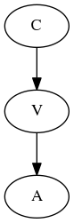
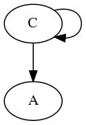
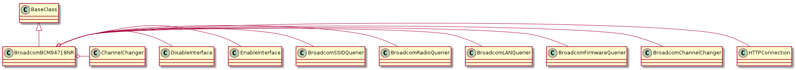

The Broadcom advertises a telnet connection but it will not let you log in. To control it you will need to send commands to its web-page. Although something like Selenium should work, to simplify the control for the command line, a more contained method will be used. One way to control it would be to use curl to send commands to the Access Point.
Using curl introduces two problems:
- Most distributions do not come with curl installed (not a big problem for linux/unix systems)
- We now have indirect communication to the access point, as the python code has to talk to a machine that talks to the access point

Where C is the Control PC, V is a Ventriloquist PC that uses curl to talk to A, the Broadcom Access Point. In the simplest case the Control PC could fork a sub-process or talk to its localhost:

Still, the use of curl seems inelegant, so I will attempt to do it with the python standard library module urllib2 and related modules.
Note
Right now I am trying out requests (a replacement for urllib2) and BeautifulSoup with regular expressions to read the html output.
Note
The broadcom needs time between calls – if you try to access the web server too soon after a previous call to it might not respond or not respond correctly.
These are parts taken from elsewhere in the code that are used in this module.
BroadcomRadioData |
A holder of constants for setting or checking the channel |
BandEnumeration |
BroadcomRadioQuerier([band]) |
An aggregator for the two band-queriers |
BroadcomSSIDQuerier([band]) |
A querier for the ssid.asp page |
BroadcomLANQuerier(*args, **kwargs) |
A querier for the lan.asp page |
BroadcomFirmwareQuerier(*args, **kwargs) |
A querier for the firmware.asp page |
ChannelChanger(connection) |
A channel changer for the broadcom |
DisableInterface(*args, **kwargs) |
An interface enabler |
EnableInterface(*args, **kwargs) |
An interface enabler |
The RadioPageConnection is a context manager for the Broadcom controllers.
RadioPageConnection(connection[, sleep]) |
A context manager for connecting to the radio.asp page |
RadioPageConnection.__enter__() |
Sets the path and returns the connection |
RadioPageConnection.__exit__(type, value, ...) |

BroadcomBCM94718NR([hostname, username, ...]) |
A class to control and query the Broadcom BCM94718NR |
BroadcomBCM94718NR.set_channel(channel) |
Sets the wifi channel |
BroadcomBCM94718NR.get_channel(band) |
Returns the channel for the given band (uses only first character) |
BroadcomBCM94718NR.set_5_ssid(*args, **kwargs) |
|
BroadcomBCM94718NR.set_24_ssid(*args, **kwargs) |
|
BroadcomBCM94718NR.firmware_query |
A BroadcomFirmwareQuery |
BroadcomBCM94718NR.lan_query |
A BroadcomLANQuery |
BroadcomBCM94718NR.disable_command |
A command to disable a wireless interface |
BroadcomBCM94718NR.enable_command |
a commanad to enable a wireless interface |
BroadcomBCM94718NR.channel_changer |
A BroadcomChannelChanger |
BroadcomBCM94718NR.query |
A Broadcom Querier band:reader dictionary |
BroadcomBCM94718NR.ssid_query |
A Broadcom SSID Querier band:reader dictionary |
BroadcomBCM94718NR.connection |
A connection to the AP (right now this acts as an HTTPConnection builder) |
BroadcomBCM94718NR.set_5_ssid(*args, **kwargs) |
|
BroadcomBCM94718NR.set_24_ssid(*args, **kwargs) |
|
BroadcomBCM94718NR.get_ssid(band) |
Gets the ssid for the interface matching the band |
BroadcomBCM94718NR.set_channel(channel) |
Sets the wifi channel |
BroadcomBCM94718NR.get_channel(band) |
Returns the channel for the given band (uses only first character) |
BroadcomBCM94718NR.print_and_log(string) |
Sends the string to stdout and the logger (debug) |
BroadcomBCM94718NR.get_status(band) |
Outputs and logs the status of the AP |
BroadcomBCM94718NR.log_status(band) |
Prints and logs the status for a single band |
BroadcomBCM94718NR.unset_channel() |
calls an undo. |
BroadcomBCM94718NR.disable(band) |
Sets the disable command’s band and calls it. |
BroadcomBCM94718NR.enable(band) |
Sets the enable command’s band and calls it |